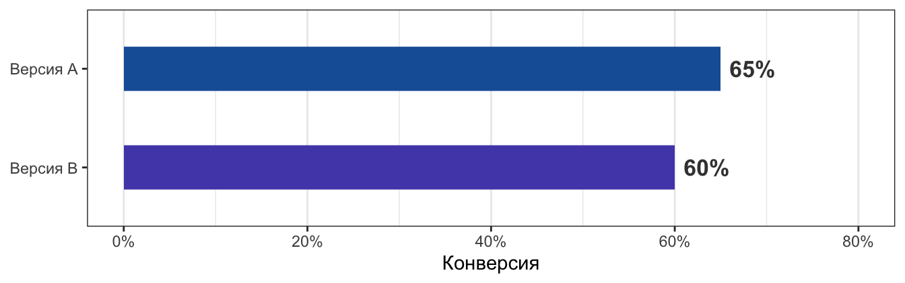
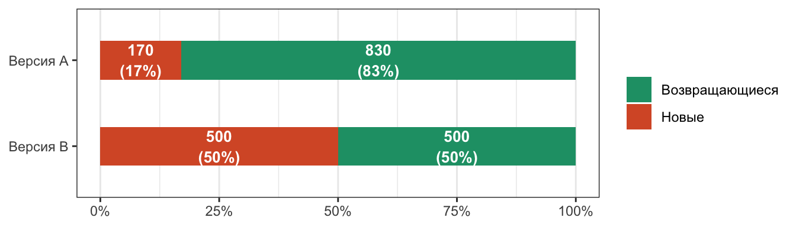
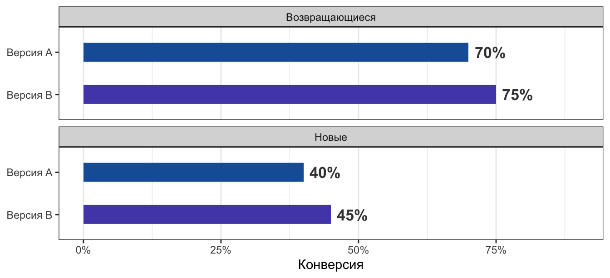
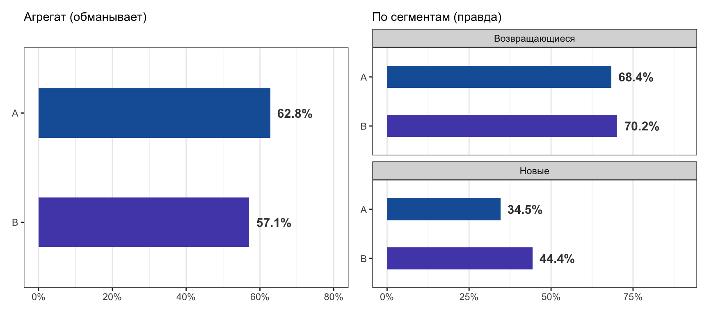

R-код
library(tidyverse)Команда тестирует редизайн экрана чекаута. По 1000 пользователей в каждой группе, метрика — конверсия в покупку. Запустили тест, ждали неделю.
Финальный дашборд — и первый импульс: откатить версию B. Но именно здесь можно принять неверное решение из-за парадокса Симпсона — эффекта, при котором агрегированная метрика указывает в сторону, противоположную реальности.
library(tidyverse)tibble(
version = c("Версия A", "Версия B"),
conv = c(0.65, 0.60)
) |>
ggplot(aes(x = conv, y = fct_rev(version), fill = version)) +
geom_col(width = 0.45) +
geom_text(
aes(label = scales::percent(conv, accuracy = 1)),
hjust = -0.2, size = 4.5, fontface = "bold", colour = "grey25"
) +
scale_fill_manual(values = c("Версия A" = "#185FA5", "Версия B" = "#534AB7")) +
scale_x_continuous(labels = scales::percent, limits = c(0, 0.80)) +
labs(x = "Конверсия", y = NULL) +
theme_bw() +
theme(legend.position = "none", panel.grid.major.y = element_blank())
Разница в 5 п.п. выглядит убедительно. Здравый смысл говорит: откатить, B плох.
Но прежде чем принимать решение — проверь, одинаковы ли группы по составу.
Рандомизатор в тесте не был стратифицирован по типу пользователя. В разгар теста случился органический всплеск трафика — и по случайности новые пользователи непропорционально часто попадали в группу B. Это не манипуляция и не ошибка разработки: просто случайный перекос, от которого не застрахован ни один нестратифицированный тест.
Новые пользователи конвертируют хуже в принципе: ещё не знакомы с продуктом, не доверяют бренду.
tibble(
version = c("Версия A", "Версия A", "Версия B", "Версия B"),
user_type = c("Возвращающиеся", "Новые", "Возвращающиеся", "Новые"),
count = c(830, 170, 500, 500)
) |>
mutate(user_type = factor(user_type, levels = c("Возвращающиеся", "Новые"))) |>
ggplot(aes(x = count, y = fct_rev(version), fill = user_type)) +
geom_col(position = "fill", width = 0.45) +
geom_text(
aes(label = paste0(count, "\n(", count / 10, "%)")),
position = position_fill(vjust = 0.5),
colour = "white", size = 3.5, fontface = "bold", lineheight = 1.1
) +
scale_fill_manual(
values = c("Возвращающиеся" = "#1D9E75", "Новые" = "#D85A30")
) +
scale_x_continuous(labels = scales::percent) +
labs(x = NULL, y = NULL, fill = NULL) +
theme_bw() +
theme(panel.grid.major.y = element_blank())
Теперь смотрим конверсию внутри каждого сегмента:
tibble(
version = rep(c("Версия A", "Версия B"), 2),
user_type = c(rep("Новые", 2), rep("Возвращающиеся", 2)),
conv = c(0.40, 0.45, 0.70, 0.75)
) |>
ggplot(aes(x = conv, y = fct_rev(version), fill = version)) +
geom_col(width = 0.45) +
geom_text(
aes(label = scales::percent(conv, accuracy = 1)),
hjust = -0.2, size = 4.5, fontface = "bold", colour = "grey25"
) +
scale_fill_manual(values = c("Версия A" = "#185FA5", "Версия B" = "#534AB7")) +
scale_x_continuous(labels = scales::percent, limits = c(0, 0.90)) +
facet_wrap(~user_type, ncol = 1) +
labs(x = "Конверсия", y = NULL) +
theme_bw() +
theme(legend.position = "none", panel.grid.major.y = element_blank())
Редизайн работает. Агрегированная метрика нас обманула.
Агрегированная конверсия — это взвешенное среднее. Состав групп задаёт веса:
\[ \text{Conv}_A = \underbrace{0{,}17}_{\text{доля новых}} \times 40\% + \underbrace{0{,}83}_{\text{доля возвр.}} \times 70\% \approx 65\% \]
\[ \text{Conv}_B = \underbrace{0{,}50}_{\text{доля новых}} \times 45\% + \underbrace{0{,}50}_{\text{доля возвр.}} \times 75\% = 60\% \]
Когда группы несбалансированы по конфаундеру (тип пользователя), агрегат сравнивает разные вещи. Группа A тянется вверх за счёт 830 возвращающихся, группа B — вниз за счёт 500 новых.
Классический пример — приёмная комиссия Калифорнийского университета в Беркли 1973 года. В агрегате мужчин принимали чаще (44%), чем женщин (35%). Но при разбивке по факультетам картина разворачивалась: женщины чаще подавали на конкурентные факультеты с низким процентом принятых — а внутри каждого факультета гендерной разницы не было. Именно это исследование сделало парадокс Симпсона широко известным в статистике.
Конверсии по сегментам зафиксированы. Меняй только долю новых пользователей в каждой группе. Попробуй выровнять обе группы — парадокс исчезнет.
viewof pNewA = Inputs.range([0, 1], {
label: "Доля новых пользователей в группе A",
value: 0.17, step: 0.01,
format: x => `${Math.round(x * 100)}%`
})
viewof pNewB = Inputs.range([0, 1], {
label: "Доля новых пользователей в группе B",
value: 0.50, step: 0.01,
format: x => `${Math.round(x * 100)}%`
})CONV = ({ new_A: 0.40, new_B: 0.45, ret_A: 0.70, ret_B: 0.75 })
N = 1000result = {
const nNA = Math.round(pNewA * N), nRA = N - nNA
const nNB = Math.round(pNewB * N), nRB = N - nNB
const cA = nNA * CONV.new_A / N + nRA * CONV.ret_A / N
const cB = nNB * CONV.new_B / N + nRB * CONV.ret_B / N
return {
cA, cB, nNA, nRA, nNB, nRB,
pctA: Math.round(cA * 100),
pctB: Math.round(cB * 100),
paradox: cA > cB
}
}html`<div style="
display: inline-flex; align-items: center; gap: 6px;
margin: 6px 0 12px; padding: 5px 14px; border-radius: 14px;
font-size: 12px; font-weight: 500; transition: all .3s;
background: ${result.paradox ? '#FAEEDA' : '#EAF3DE'};
color: ${result.paradox ? '#854F0B' : '#3B6D11'};
">
${result.paradox
? '⚡ Парадокс Симпсона активен — A лидирует в агрегате, хотя B лучше в обоих сегментах'
: '✓ Парадокса нет — B побеждает и в агрегате'}
</div>`Plot.plot({
title: "Общая конверсия",
color: { type: "identity" },
marks: [
Plot.barX(
[{ y: "Версия A", x: result.pctA, col: "#185FA5" },
{ y: "Версия B", x: result.pctB, col: "#534AB7" }],
{ x: "x", y: "y", fill: "col" }
),
Plot.text(
[{ y: "Версия A", x: result.pctA },
{ y: "Версия B", x: result.pctB }],
{ x: d => d.x + 1, y: "y", text: d => d.x + "%",
textAnchor: "start", dx: 4, fontWeight: "bold" }
),
Plot.ruleX([0])
],
x: { domain: [0, 105], label: "Конверсия, %" },
y: { label: null },
height: 110,
marginLeft: 90,
marginRight: 50
})html`<div style="font-size:13px; margin: 0.5rem 0 1rem">
<div style="font-size:11px; color:#888; font-weight:500;
letter-spacing:.04em; margin-bottom:7px">СОСТАВ ГРУПП</div>
${["A", "B"].map(v => {
const nRet = v === "A" ? result.nRA : result.nRB
const nNew = v === "A" ? result.nNA : result.nNB
const retPct = Math.round(nRet / N * 100)
return `
<div style="display:grid; grid-template-columns:90px 1fr;
gap:10px; align-items:center; margin:4px 0">
<span style="font-size:12px; font-weight:500; color:#555">Версия ${v}</span>
<div style="height:26px; border-radius:5px; overflow:hidden; display:flex">
<div style="width:${retPct}%; background:#1D9E75;
display:flex; align-items:center; overflow:hidden">
<span style="font-size:11px; color:rgba(255,255,255,.9);
padding:0 7px; white-space:nowrap; overflow:hidden">
${nRet >= 60 ? nRet + " возвр." : nRet >= 25 ? nRet : ""}
</span>
</div>
<div style="width:${100 - retPct}%; background:#D85A30;
display:flex; align-items:center; overflow:hidden">
<span style="font-size:11px; color:rgba(255,255,255,.9);
padding:0 6px; white-space:nowrap; overflow:hidden">
${nNew >= 60 ? nNew + " нов." : nNew >= 25 ? nNew : ""}
</span>
</div>
</div>
</div>`
}).join("")}
<div style="display:flex; gap:14px; margin-top:8px; flex-wrap:wrap">
<span style="font-size:11px; color:#888; display:flex; align-items:center; gap:5px">
<span style="width:9px;height:9px;border-radius:2px;
background:#1D9E75;display:inline-block"></span>
возвращающиеся (conv: A=${Math.round(CONV.ret_A*100)}%,
B=${Math.round(CONV.ret_B*100)}%)
</span>
<span style="font-size:11px; color:#888; display:flex; align-items:center; gap:5px">
<span style="width:9px;height:9px;border-radius:2px;
background:#D85A30;display:inline-block"></span>
новые (conv: A=${Math.round(CONV.new_A*100)}%,
B=${Math.round(CONV.new_B*100)}%)
</span>
</div>
</div>`Воспроизведём то же самое с шумом через rbinom() — как в настоящем тесте. Стохастические данные не спасают: парадокс устойчив к случайному шуму.
set.seed(42)
conv <- list(new_A = .40, new_B = .45, ret_A = .70, ret_B = .75)
n <- 1000
sim_group <- function(n, p_new, conv_new, conv_ret, version) {
user_type <- sample(
c("new", "returning"), n,
replace = TRUE, prob = c(p_new, 1 - p_new)
)
p <- ifelse(user_type == "new", conv_new, conv_ret)
data.frame(version, user_type, converted = rbinom(n, 1, p))
}
df <- rbind(
sim_group(n, p_new = 0.17, conv$new_A, conv$ret_A, "A"),
sim_group(n, p_new = 0.50, conv$new_B, conv$ret_B, "B")
)Стандартный тест на агрегированных данных уверенно скажет: A лучше.
agg <- df |>
group_by(version) |>
summarise(x = sum(converted), n = n())
prop.test(agg$x, agg$n)
2-sample test for equality of proportions with continuity correction
data: agg$x out of agg$n
X-squared = 6.5306, df = 1, p-value = 0.0106
alternative hypothesis: two.sided
95 percent confidence interval:
0.01312313 0.10087687
sample estimates:
prop 1 prop 2
0.628 0.571 А сегментный анализ показывает обратное — B выигрывает в обеих группах:
df |>
group_by(version, user_type) |>
summarise(
users = n(),
conv_rate = scales::percent(mean(converted), accuracy = .1),
.groups = "drop"
) |>
knitr::kable(col.names = c("Version", "Segment", "Users", "Conv. rate"))| Version | Segment | Users | Conv. rate |
|---|---|---|---|
| A | new | 165 | 34.5% |
| A | returning | 835 | 68.4% |
| B | new | 507 | 44.4% |
| B | returning | 493 | 70.2% |
library(patchwork)
p_agg <- df |>
group_by(version) |>
summarise(conv = mean(converted)) |>
ggplot(aes(x = conv, y = fct_rev(version), fill = version)) +
geom_col(width = 0.45) +
geom_text(
aes(label = scales::percent(conv, accuracy = .1)),
hjust = -0.2, size = 4, fontface = "bold", colour = "grey25"
) +
scale_fill_manual(values = c("A" = "#185FA5", "B" = "#534AB7")) +
scale_x_continuous(labels = scales::percent, limits = c(0, 0.80)) +
labs(x = NULL, y = NULL, subtitle = "Агрегат (обманывает)") +
theme_bw() +
theme(legend.position = "none", panel.grid.major.y = element_blank())
p_seg <- df |>
group_by(version, user_type) |>
summarise(conv = mean(converted), .groups = "drop") |>
mutate(
user_type = case_match(
user_type,
"new" ~ "Новые",
"returning" ~ "Возвращающиеся"
)
) |>
ggplot(aes(x = conv, y = fct_rev(version), fill = version)) +
geom_col(width = 0.45) +
geom_text(
aes(label = scales::percent(conv, accuracy = .1)),
hjust = -0.2, size = 4, fontface = "bold", colour = "grey25"
) +
scale_fill_manual(values = c("A" = "#185FA5", "B" = "#534AB7")) +
scale_x_continuous(labels = scales::percent, limits = c(0, 0.90)) +
facet_wrap(~user_type, ncol = 1) +
labs(x = NULL, y = NULL, subtitle = "По сегментам (правда)") +
theme_bw() +
theme(legend.position = "none", panel.grid.major.y = element_blank())
p_agg | p_seg
Стратифицированная рандомизация. Перед запуском теста разбей аудиторию на страты (новые / возвращающиеся, платформа, страна) и рандомизируй внутри каждой страты. Тогда состав групп будет одинаковым по определению — парадокс Симпсона становится невозможным.
Проверяй баланс групп. Перед интерпретацией результатов убедись, что ключевые характеристики пользователей (тип, платформа, канал привлечения) распределены примерно одинаково между группами. Сильное отклонение — повод насторожиться, даже если рандомизатор работал корректно.
Сегментный анализ как дефолт. Никогда не останавливайся на агрегате как на единственном числе. Анализируй результаты по ключевым сегментам — это должно быть частью стандартного пайплайна, а не исключительной мерой.
CUPED (Controlled-experiment Using Pre-Experiment Data). Вместо сырой метрики анализируешь её остаток после вычитания корреляции с доэкспериментальным поведением пользователя. Это снижает дисперсию и косвенно уменьшает влияние дисбаланса по составу групп — но не заменяет стратификацию.
Подписывайтесь на телеграм-канал!